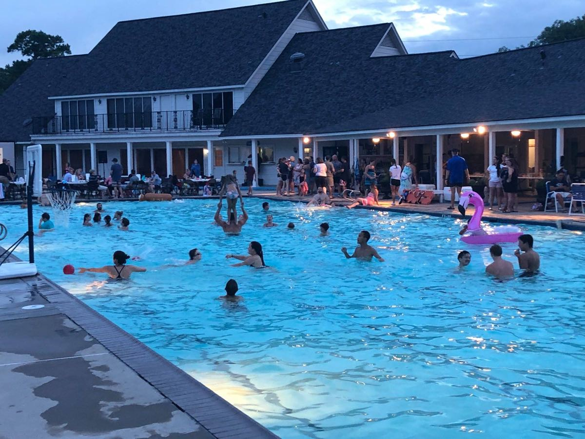

7 min · 2.2 mi
Lakewood Residents' Club
A 50-meter temperature-controlled pool with a diving board, a separate wading pool for the little ones, and lifeguards on duty whenever it is open. There is a playground with a climbing structure, sand volleyball, four lighted tennis courts and two pickleball courts, and a summer swim team that most neighborhood kids seem to end up on. It sits right beside Faulkey Gully, so the trail is a few steps from the gate.
Worth knowing up front: this is a separate members-only club, not a Lakewood Forest HOA amenity. Living in the neighborhood does not grant access — households join and pay dues, currently $592 a year or $50 a month.
Visit site